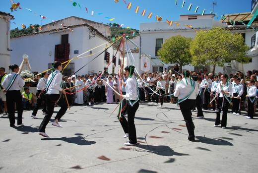
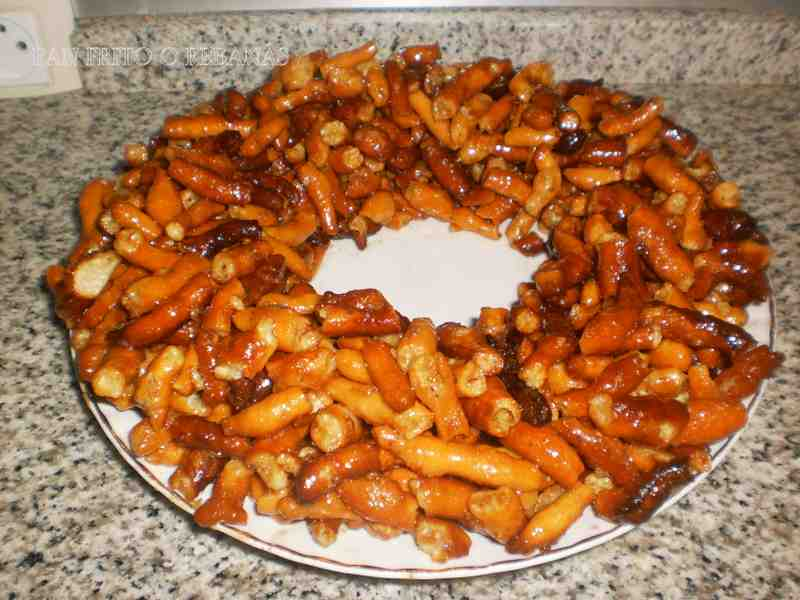
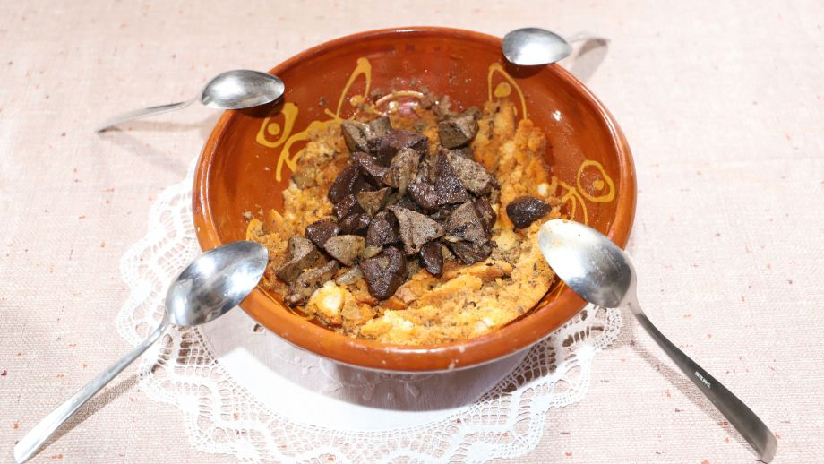

Fiestas de Agosto
En honor a la Virgen de la Antigua,las fiestas principales de agosto son en honor a Nuestra Señora de la Antigua, patrona local, celebrándose generalmente alrededor del 15 de agosto (Día de la Asunción)

Gastronomía
Platos típicos: Cachuela Y Canelilla.

